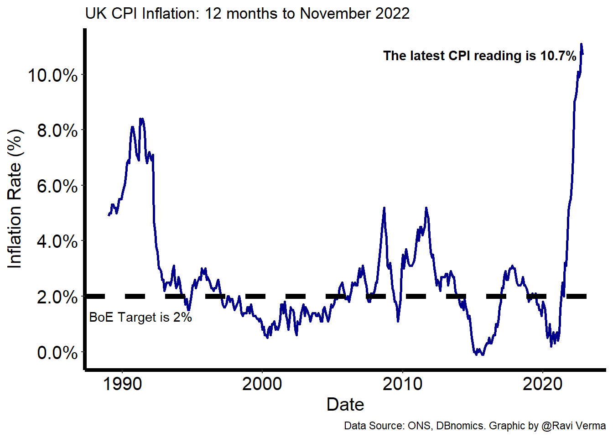
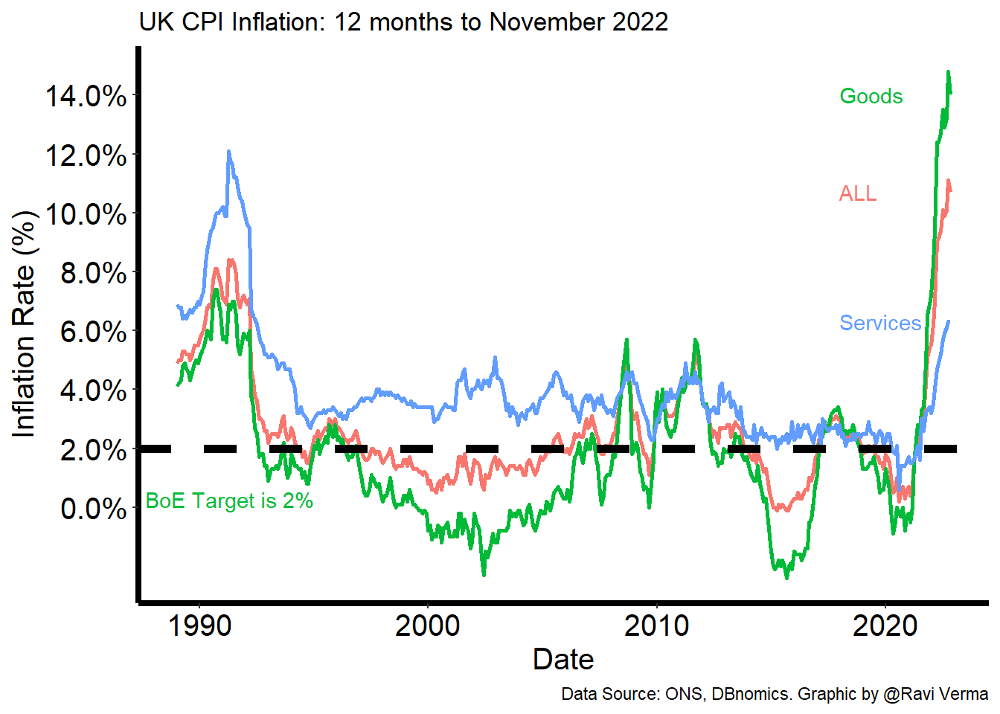
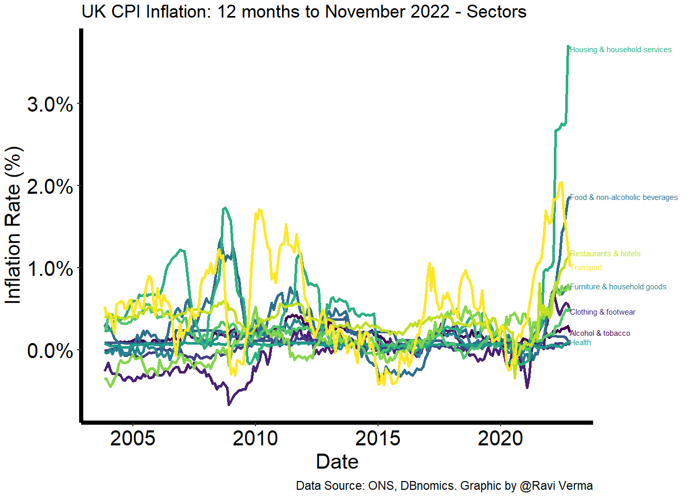
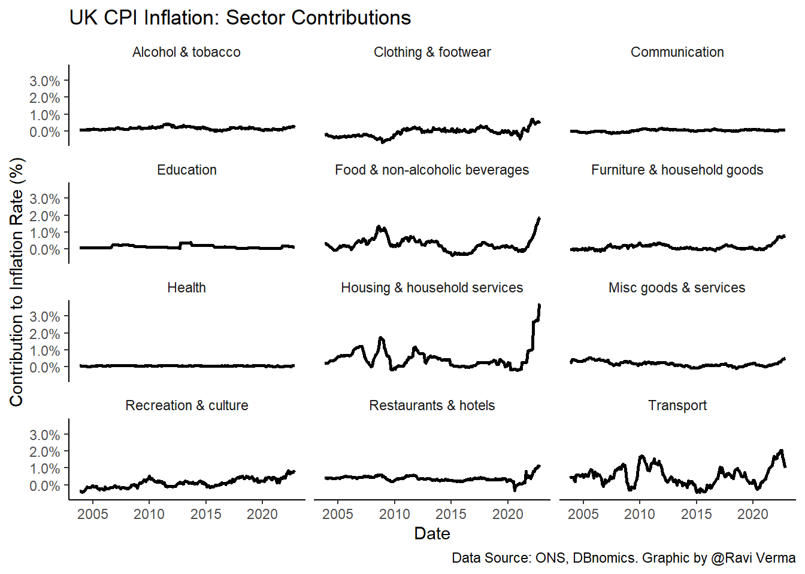
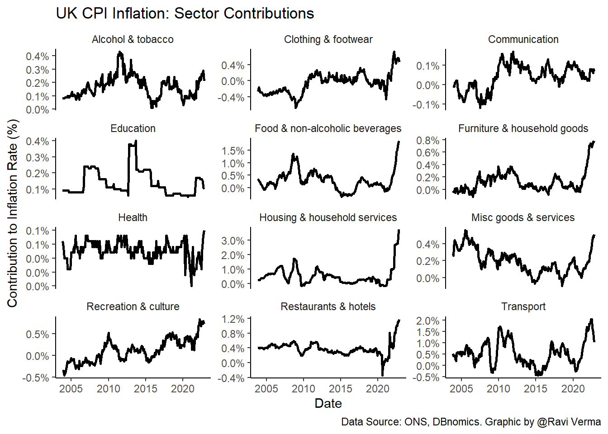
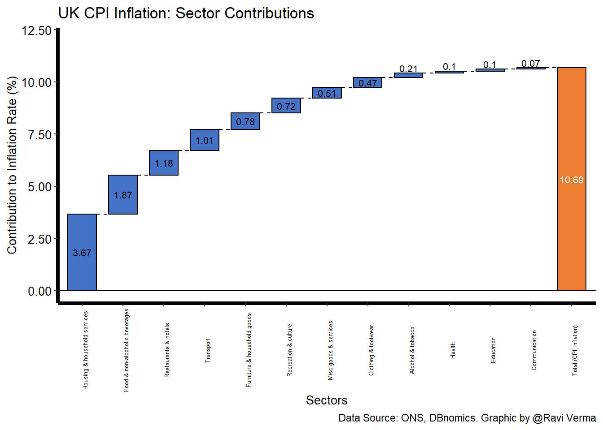

UK CPI Inflation November 2022
The latest UK CPI figures were released for November 2022
Show the code
# plot 1
ggplot(df_overall_inflation, aes(period, value/100)) +
geom_line(lwd=1, colour="darkblue") +
labs(x = "Date",
y='Inflation Rate (%)',
title = "UK CPI Inflation: 12 months to November 2022",
caption = "Data Source: ONS, DBnomics. Graphic by @Ravi Verma") +
geom_text_repel(aes(label = sprintf("The latest CPI reading is %s%%", data_ends$value), fontface='bold'), data = data_ends) +
scale_y_continuous(labels = scales::label_percent(accuracy=0.1), breaks = seq(0,0.12, by=0.02)) +
theme(panel.grid.major = element_blank(),
panel.grid.minor = element_blank(),
panel.background = element_blank(),
axis.line = element_line(size = 1.5, colour = "black"),
axis.text.x = element_text(size = 15, colour = "black"),
axis.text.y = element_text(size = 15, colour = "black"),
axis.title.x = element_text(size = 15, colour = "black"),
axis.title.y = element_text(size = 15, colour = "black")) +
geom_hline(yintercept=0.02, linetype="dashed", color = "black", size=2) +
geom_text(aes(x=as.Date("1991-05-01", "%Y-%m-%d"), y=0.02, label = "BoE Target is 2%", vjust = 0), nudge_y = -0.009, check_overlap = TRUE)
Assessing inflation by breaking it down into Goods and Services.
Show the code
# plot 2
p <- ggplot(df_goods_services, aes(period, value/100, colour=stat_type)) + geom_line(lwd=1)
p + labs(x = "Date",
y='Inflation Rate (%)',
title = "UK CPI Inflation: 12 months to November 2022",
caption = "Data Source: ONS, DBnomics. Graphic by @Ravi Verma") +
scale_y_continuous(labels = scales::label_percent(accuracy=0.1), breaks = seq(0,0.16, by=0.02)) +
theme(panel.grid.major = element_blank(),
panel.grid.minor = element_blank(),
panel.background = element_blank(),
axis.line = element_line(size = 1.5, colour = "black"),
axis.text.x = element_text(size = 15, colour = "black"),
axis.text.y = element_text(size = 15, colour = "black"),
axis.title.x = element_text(size = 15, colour = "black"),
axis.title.y = element_text(size = 15, colour = "black"),
legend.position = "none") +
geom_hline(yintercept=0.02, linetype="dashed", color = "black", size=2) +
geom_text(aes(x=as.Date("1991-05-01", "%Y-%m-%d"), y=0.02, label = "BoE Target is 2%", vjust = 0), nudge_y = -0.02, check_overlap = TRUE) +
geom_text(data = filter(df_goods_services, period == max(period)),aes(label = stat_type, x=as.Date("2018-01-01", "%Y-%m-%d")),hjust = 0, nudge_x = -0.5, check_overlap = TRUE) +
coord_cartesian(clip = 'off') 
Decomposing CPI inflation into various sectors to see which contribute the highest to inflation.
Show the code
# plot 3
p <- ggplot(df, aes(period, value/100, colour=sector)) + geom_line(lwd=1) + scale_color_viridis(discrete = TRUE)
p + labs(x = "Date",
y='Inflation Rate (%)',
title = "UK CPI Inflation: 12 months to November 2022 - Sectors",
caption = "Data Source: ONS, DBnomics. Graphic by @Ravi Verma") +
theme(panel.grid.major = element_blank(),
panel.grid.minor = element_blank(),
panel.background = element_blank(),
axis.line = element_line(size = 1.5, colour = "black"),
axis.text.x = element_text(size = 15, colour = "black"),
axis.text.y = element_text(size = 15, colour = "black"),
axis.title.x = element_text(size = 15, colour = "black"),
axis.title.y = element_text(size = 15, colour = "black"),
legend.position = "none",
plot.margin = margin(0.1, 2.6, 0.1, 0.1, "cm")) +
scale_y_continuous(labels = label_percent(accuracy = 0.1)) +
geom_text(data = filter(df, period == max(period)),
aes(label = sector),
hjust = 0, nudge_x = 0.5, check_overlap = TRUE, size=2) +
coord_cartesian(clip = 'off') 
Analyse inflation by sector looking at the time series of each sector individually.
Show the code
# plot 4
ggplot(df, aes(period, value/100)) +
geom_line(lwd=1) +
facet_wrap(vars(sector), nrow = 4) +
theme(strip.background = element_blank(),
strip.placement = "outside",
panel.background = element_rect(fill = NA),
axis.line = element_line()) +
scale_y_continuous(labels = label_percent(accuracy = 0.1)) +
labs(x = "Date",
y='Contribution to Inflation Rate (%)',
title = "UK CPI Inflation: Sector Contributions",
caption = "Data Source: ONS, DBnomics. Graphic by @Ravi Verma")
What if we create a similar graph but change the y axis for each chart such that it is relative to each other.
Show the code
# plot 5 - relative scales
ggplot(df, aes(period, value/100)) +
geom_line(lwd=1) +
facet_wrap(vars(sector), scales = "free_y", nrow = 4) +
theme(strip.background = element_blank(),
strip.placement = "outside",
panel.background = element_rect(fill = NA),
axis.line = element_line()) +
scale_y_continuous(labels = label_percent(accuracy = 0.1)) +
labs(x = "Date",
y='Contribution to Inflation Rate (%)',
title = "UK CPI Inflation: Sector Contributions",
caption = "Data Source: ONS, DBnomics. Graphic by @Ravi Verma")
Specifically looking at the YoY inflation to November 2022 we can see which sectors contribute to inflation the most.
Show the code
# plot 6
waterfall(df_latest[,c("value", 'sector')], calc_total = TRUE, total_rect_color = "#ED7D31", total_axis_text = "Total (CPI Inflation)",
fill_colours = rep(c("#4472C4"), 12), fill_by_sign = FALSE) +
labs(x = "Sectors", y='Contribution to Inflation Rate (%)',
title = "UK CPI Inflation: Sector Contributions",
caption = "Data Source: ONS, DBnomics. Graphic by @Ravi Verma") +
theme(panel.grid.major = element_blank(),
panel.grid.minor = element_blank(),
panel.background = element_blank(),
axis.line = element_line(size = 1.5, colour = "black"),
axis.text.x = element_text(size = 5, colour = "black", angle = 90),
axis.text.y = element_text(size = 10, colour = "black"),
axis.title.x = element_text(size = 10, colour = "black"),
axis.title.y = element_text(size = 10, colour = "black")) +
scale_y_continuous(limits = c(0,12) ,labels = label_number(accuracy = 0.01))